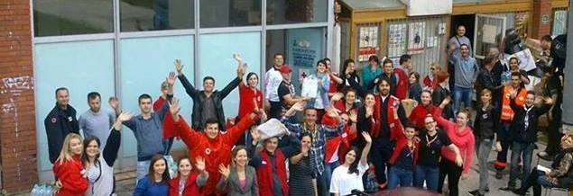

<body>

<div class= "sadrzaj">
<div id="podloga">
				<p class="slika_svi">  </p>
				<p class = "tekst_o_nama"> Crveni križ općine Iliža je udruženje - humanitarna, dobrovoljna, neprofitna organizacija, ima svojstvo pravnog lica i  konstituisana je u skladu sa Zakonom o Crvenom križu Federacije Bosne i Hercegovine .<br><br>
Humanitarne ciljeve i zadatke izvršava u oblasti zdravstva, socijalne politike, vaspitanja, službe traženja i zaštite prava građana, a djeluje na osnovu misije i na principima međunarodnog pokreta Crvenog križa, Crvenog polumjeseca i Crvenog kristala, i to: humanosti, nepristrasnosti, neutralnosti, nezavisnosti, dobrovoljnosti, jedinstva i univerzalnosti.    
<br><br>U slučaju prirodnih i drugih nesreća, Crveni križ općine Iliža, kao sastavni dio jedinstvenog sistema zaštite i spašavanja, obavlja zadatke u skladu sa zakonima, Sporazumom o saradnji sa Civilnom zaštitom i drugim propisima.
U slučaju oružanog sukoba Crveni križ općine Iliža izvršava obaveze u skladu sa Ženevskim konvencijama i preporukama Međunarodne federacije društava Crvenog križa, Crvenog polumjeseca i Crvenog kristala.
</p>
</div>
</div>

</body>
